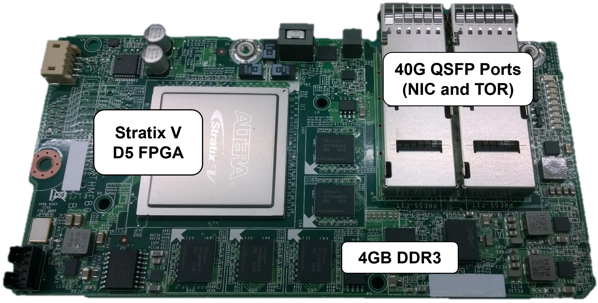
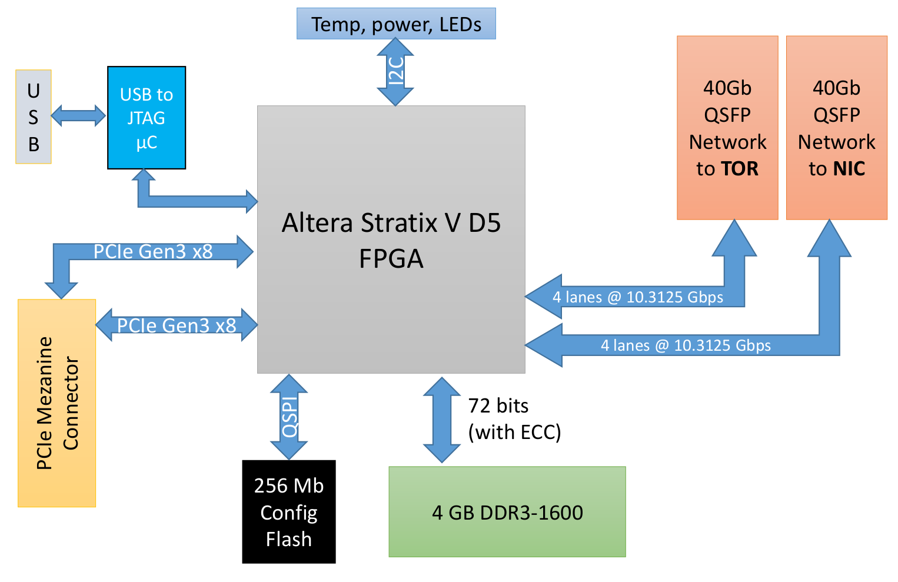
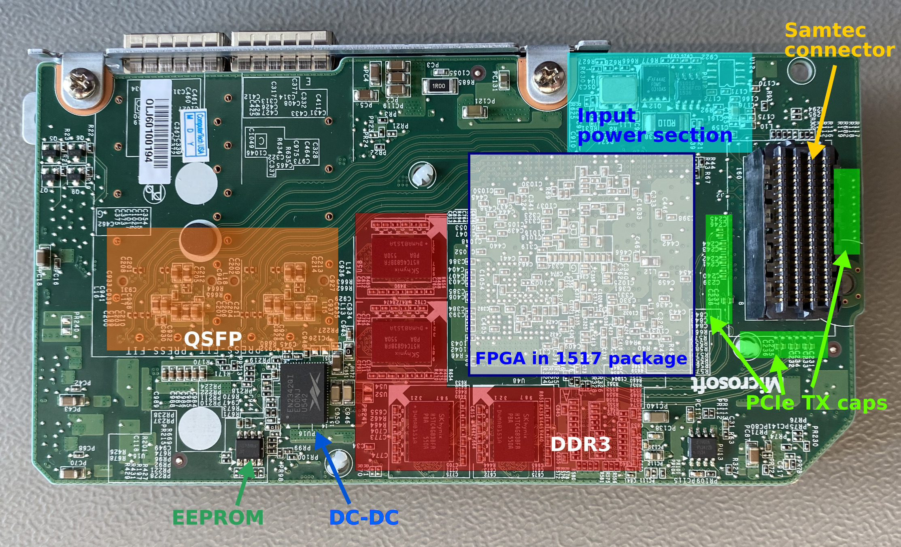
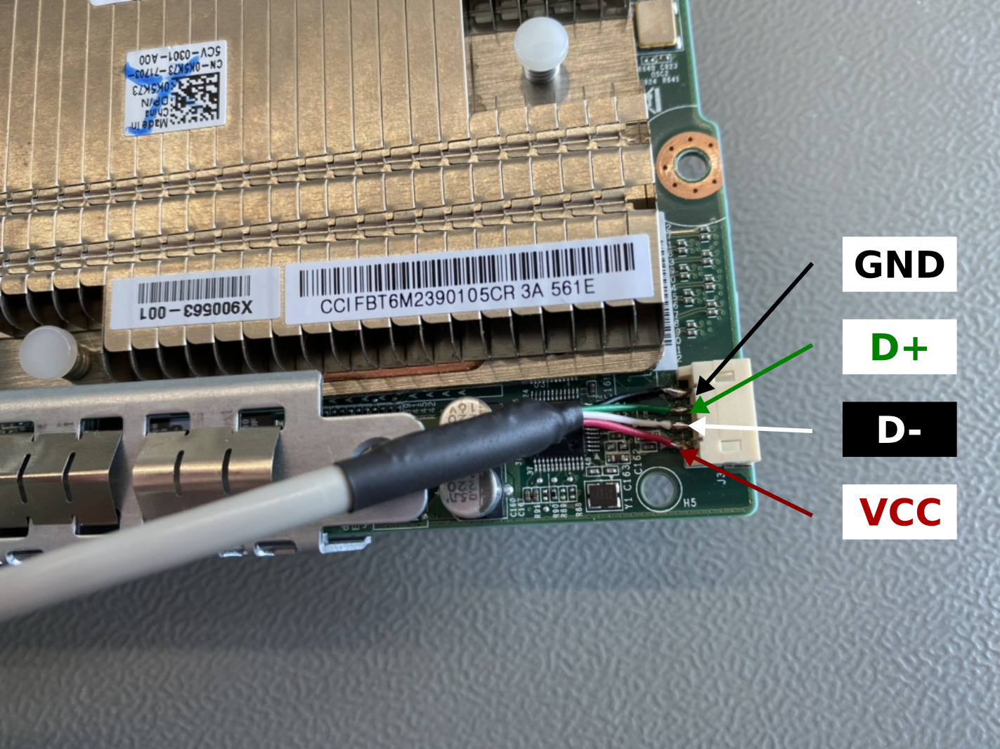
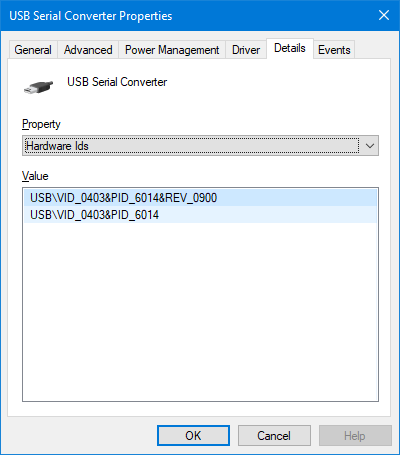
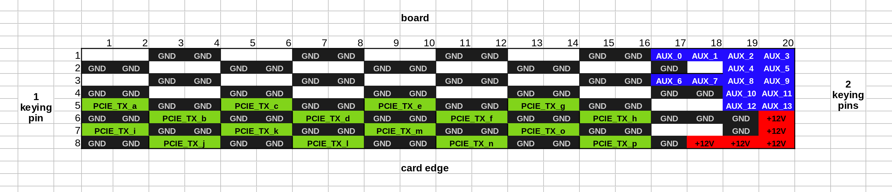
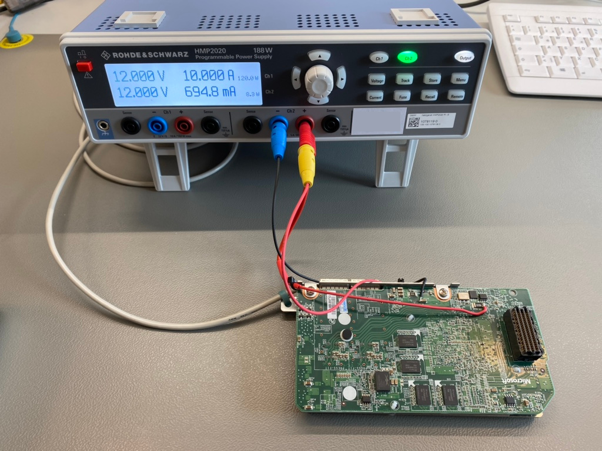
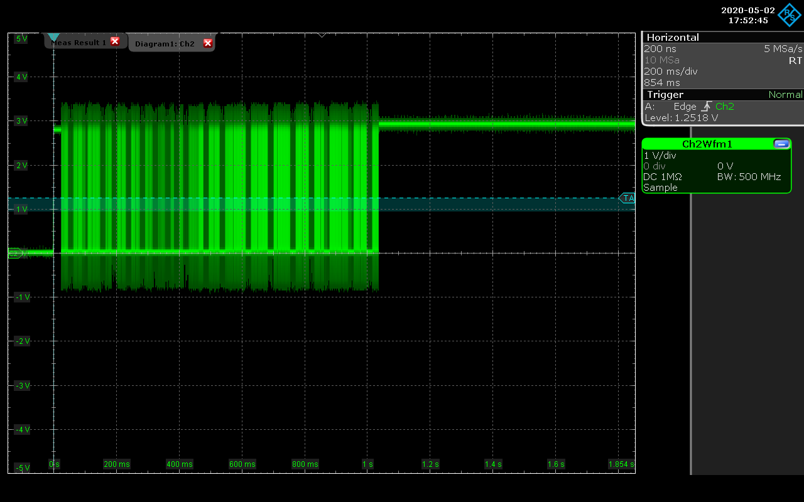
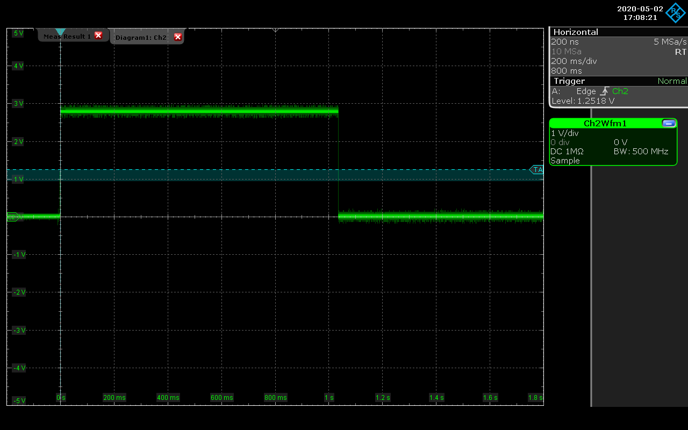
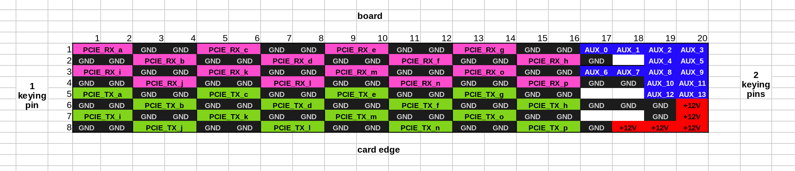

- on Sun 03 May 2020
A couple of weeks ago @rombik_su in a Twitter thread pointed out a very cheap FPGA accelerator card on eBay. The board contains a proprietary Samtec board-to-board connector, most likely carrying power, PCI Express, and auxiliary signals (JTAG, IPMI to BMC, ...), two QSFP cages, DDR3 and a large FPGA, hidden under the heatsink.
Being passionate about everything FPGA-related, and with Coronavirus lockdown limiting the number of fun things to do, I decided to purchase the board. An evaluation kit of this kind can easily cost thousands, and 40 USD is a real bargain.
Initial research
While waiting for the board to arrive, I did some initial investigation. The description on eBay is quite cryptic. The title of the listing included all the text from the labels on the board, including the label "AIRFLOW" indicating the direction of the forced air through the board.
One of the most fruitful clues was the label "Microsoft" on the board. It was well-publicized a couple of years ago that Microsoft is using FPGAs to accelerate Bing searches, and this might be one of the boards used in the servers.
Remembering that Microsoft went with Altera (now Intel PSG) and that this was some years back, it is most likely that the card contains a Stratix V FPGA.
The first link on Google (or should I have used Bing? would the FPGAs be aware that I am looking for information about them?) for "microsoft catapult stratix v" presented some conceptually similar cards, but not exactly the same.
The second link, however, presented the exact card which I have purchased:

The paper also contains a block diagram highlighting the main components of the board:

The paper also mentions "widely-used OpenCompute server" which could give out some information about the pinout on the Samtec connector. Since there are numerous formats for mezzanine cards standardized by the OpenCompute project, and finding the matching one is not trivial, I decided to leave this task for later.
Further digging in the search results, I was also able to find another photo of the board with the heatsink removed.
The marking on the FPGA are removed, but we already know that it is a Stratix V, and some things were expected from previous documents, e.g. 5 DDR3 chips for a combined of 9 chips for 72-bit DDR3 data width).
What I found interesting in this picture is a Flash memory (Micron 25Q256) in the top right corner, which means that the image for the FPGA is most likely stored on the board and is not downloaded through the connector at the startup. It is also possible that Configuration via Protocol is used, and only the basic image is stored in the Flash.
Board overview
Then one day, the board finally arrives. The board matches the description in the previously-mentioned article.
A quick look at the board identifies the following components:
- 160 pin Samtec SEARAY™ connector
- USB (FT232H, used as a JTAG interface)
- power entry (FDMS0310AS MOSFET, 0.01 Ohm resistor, unidentified IC with the markings "L536FCD")
- power converters (Enpirion® EN2342QI DC-DC converter)
- programmable oscillator (IDT8N4Q001)
- Flash memory for FPGA (Micron N25Q256A)
- I2C EEPROM (ST M24128-BW)
- DDR3 memory (SK hynix H5TC4G83BFR)

USB/JTAG
At this point, it was time to start experimenting with the board. The FT232H seems to be powered from the USB BUS voltage: pin 1 of J3 is connected to pin 40 (VREGIN) of FT232H. This is why I decided to first start with the USB. With the datasheet for FT232H it was trivial to determine the pin assignments on the connector. I did not want to solder directly on the connector pins, as I would like to make a proper cable in the future.

After plugging the cable in the computer, the FT232H is recognized as "USB Serial Converter":

Connector, 1st look
At this point I could start trying to reverse engineer the connector pinout. I managed to figure out the following connections:
- Ground
- Input power: there are a couple of pins connected to the Drain of the large MOSFET. I also assume that the level is, as it is common for PCIe cards, 12V.
- There are 16 pairs of AC-coupling capacitors near the connector. PCIe standard mandates capacitors on the TX side, so I assume this is PCIE_TX. Not knowing the exact lane numbering, I decided to enumerate them with letters instead of numbers.
- PCIe RX is TBD, but looking at unassigned pins a clear pattern is visible
- Some of the pins are connected to the circuit above the connector - I have annotated these pins, but right now I do not have a clear idea what is the purpose. I annotated those pins as AUX.

Power
I have connected the 12V on the Drain side of the Q12 (FDMS0310AS), which has also energized the PU12 and +12V pins on the Samtec connector. However, the power consumption was only 3 mA, and the MOSFET was left closed.
I could not find any information about PU12 (L536FCD). I assume it is some kind of a current-limit protection, measuring the current through the 0.01 Ohm shunt resistor and controlling the Gate pin of Q12.
To literally bypass this problem, I have decided to also connect 12 V on the other side of the Q12. This yielded some results; the power consumption raised to 695 mA, which is what one would expect from such board, and the LEDs turned on.

On various points in the circuit I could also measure all the voltages one would expect to find in such a circuit:
- 1.5V on the Enpirion (PU16) output
- 1.35 V on C406 (DDR3 voltage)
- 0.674 V on C1005 (DDR3 termination voltage)
- 2.5 V on C442 (periphery)
- 3.3 V on QSFP capacitors
- 0.9 V on C354 (FPGA core voltage)
Memories
FPGA configuration memory
The heatsink covers the large part of the top side of the board including the Flash memory for the FPGA configuration. One can, however, still reach the pins 8 and 9 (DQ1 and DQ2, respectively) with an oscilloscope probe.
After the power is applied to the board, we can observe that the FPGA gets programmed in roughly a second. This is above the 100 ms/200 ms limit required by the PCIe standard, but in this custom form factor the value might be different.
DQ2 pin on N25Q256A:

LEDs on the board are also driven by the FPGA and remain lit for a second until the FPGA is not programmed, another indication that the FPGA gets configured from the memory.
EEPROM
Another memory on the board is a small 128Kbit EEPROM, which probably stores MAC addresses, serial numbers, and other similar information.
Quite interestingly, SDA and SCL lines remain stuck low after some time. Maybe the EEPROM is not used at all, or maybe there is some other part of the circuit is keeping the EEPROM interface state machine in a reset.
SDA pin on M24128-BW, SCL is very similar:

Connector, 2nd look
With the board powered on, I could measure the voltage on the connector pins. As expected, on 16 differential pairs I can sense a bias voltage of the PCIe receivers, around 0.7 V.
Some of the AUX pins have a slight bias, but this is probably caused by pull-up resistors and other components. It would require more investigation to fully understand the purpose of these pins.

Components
QSFP
Plugging in a QSFP cable only marginally increases the power consumption. It is clear that the high-speed circuit is disabled, most likely because of an internal register configuration and less likely because the cable is "not compatible", i.e. the board parses the EEPROM and it does not enable the high-speed circuit.
Consumption from the 12V input:
- without the QSFP module inserted: 696.7 mA
- with the QSFP module inserted: 697.5 mA
IDT oscillator
IDT oscillator is producing 645 MHz clock.
DDR3
I have probed what I presume are the DDR3 termination resistors (on the bottom side, on the other side of the 5th DDR3 component on the top) and observed no switching activity. It seems that the DDR3 controller is kept in reset.
Outlook
The first bring-up session was quite successful; I have managed to turn on the board without damaging it and figure out the basic pinout of the connector.
For the next step, I plan to investigate the OpenCompute website if there exists a document that would describe the pinout of the connector. Still left to be determined are the reference clock and an enable signal from the connector.
Eventually I plan to produce a small PCB that would allow plugging this board in a normal PCIe card slot.
All trademarks and registered trademarks are the property of their respective owners.